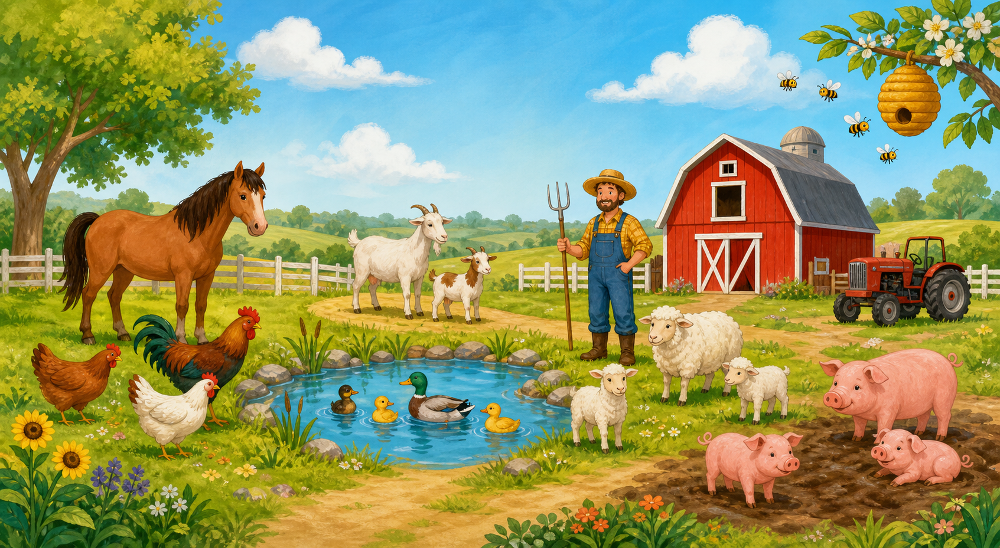

Hora de praticar!
Qual matéria vamos estudar, Julia?
A day at the farm
Julia 🌟

All about the farm
📚 Unit 4
bee · chicken · duck · farmer · goat · horse · pig · sheep
beak · feathers · tail · wings
collect the eggs · feed the horses · feed the goats · ride in a tractor
There are… · It’s got…
👀 Look and say.
✍️ Write.
No iPad, escreva palavras e frases inteiras com a Apple Pencil dentro do campo de resposta. O recurso Escrever à Mão/Scribble transforma a escrita em texto para o site conferir. O quadro livre continua sendo apenas um treino de caligrafia.
✏️ No iPad: toque no campo e escreva dentro dele com a Apple Pencil. Escreva a resposta inteira antes de conferir.
Write.
A correção vale para o texto reconhecido no campo de resposta. Este quadro livre serve somente para praticar a caligrafia.
Muito bem, Julia!
💡 Relembrar como fazer
A escrita não é lida nem corrigida automaticamente. “Concluí” mostra uma resolução para comparar; não significa que a resposta está certa.